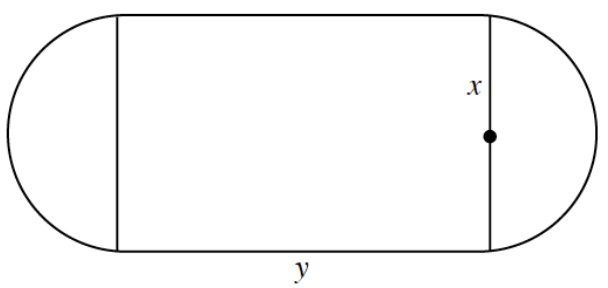
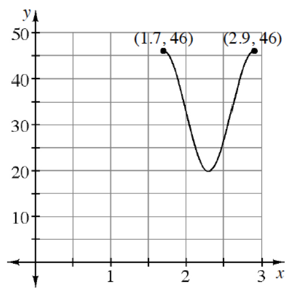

Jade is having a wonderful time riding a carousel. Her distance, d (in feet), from the fence nearest her entrance is given by the equation \(d = 25\sin\left(\frac{\pi}{8}t\right) + 35\), where t is the time in seconds since the carousel started to move.
How close can Jade be to the fence?
How much time does it take for the carousel to complete one revolution?
When is Jade 60 feet from the fence for the second time?
Sketch the graph of this situation. Label and scale the axes appropriately.
Solve the system of equations.
\[ \left\{ \begin{array}{l} 5^x\cdot 5^y = 25 \\ \log(x) + \log(y) + 9 = \log(12) \end{array} \right. \]
The tiny town of Twinypicks is located next to a deep, both of which are in between two mountain peaks. The profile of the landscape can be modeled by the function \(d(x)= -0.0005(x^3 + 3)(x + 1)(x^3 - 4.5)\) where \(x\) is horizontal distance in miles and \(f(x)\) is miles above sea level. The lake is below sea level.
Sketch the graph of the profile of the landscape on the appropriate domain.
If the width of the lake is captured in the profile of the landscape, approximately how wide is the lake?
Approximately how wide is the town if there is nothing above 100 feet over sea level?
The volume of an open-top box is \(30in^3\). The length of the base is twice the width.
Sketch a labeled diagram.
Express the total outside surface area, \(S\), in terms of the width, \(x\). Simplify.
What width will minimize the surface area?
An exponential function passes through the points \((1,70)\) and \((3,145)\). The function has a horizontal asymptote at \(y=10\). Write an equation for the function.
What is the average rate of change for the following functions over the given intervals?
\(f(x)=\sin(x),\ 5\le x\le \pi\)
\(f(x)=\log(x),\ 1.5\le x\le 10\)
Let \(\vec{w}=3\mathbf{i}-2\mathbf{j}\).
What two vectors have the same magnitude as \(\vec{w}\) but are perpendicular to \(\vec{w}\)?
What is the unit vector that is in the same direction as \(\vec{w}\)?
An indoor physical fitness room consists of a rectangular region with a semicircle on each end. The perimeter of the room has to be a 200-meter running track. Let \(A\) be the area of the rectangular region. Label all parts of the room. Note that \(x\) is the radius of the circular section.

Write an equation for \(y\) in terms of \(x\).
Express \(A\) as a function of \(x\).
What diameter will create a maximum area for the physical fitness room?
Lauren is playing with a yo-yo and keeping track of its height over time. She has plotted some key points on the graph at right. The \(y\)-values are in inches and the \(x\)-values are in seconds. Complete the following problems below based on the graph.

How much time does it take to complete one cycle?
How long is the string?
Write an equation that models the height of the yo-yo over time.
Determine the first two times when the yo-yo is exactly 30 inches above the ground.
You know that \(\sin^2(\theta)+\cos^2(\theta)=1\).
What does \(\sin^2(\theta)+\cos^2(2\theta)=\ ?\)
What does \(\sin^2(\theta-2)+\cos^2(\theta^2-2)=\ ?\)
Graph \(f(x)=\frac{1}{x-4}-3\). What is the parent equation of \(f\)? Describe the transformation completely.